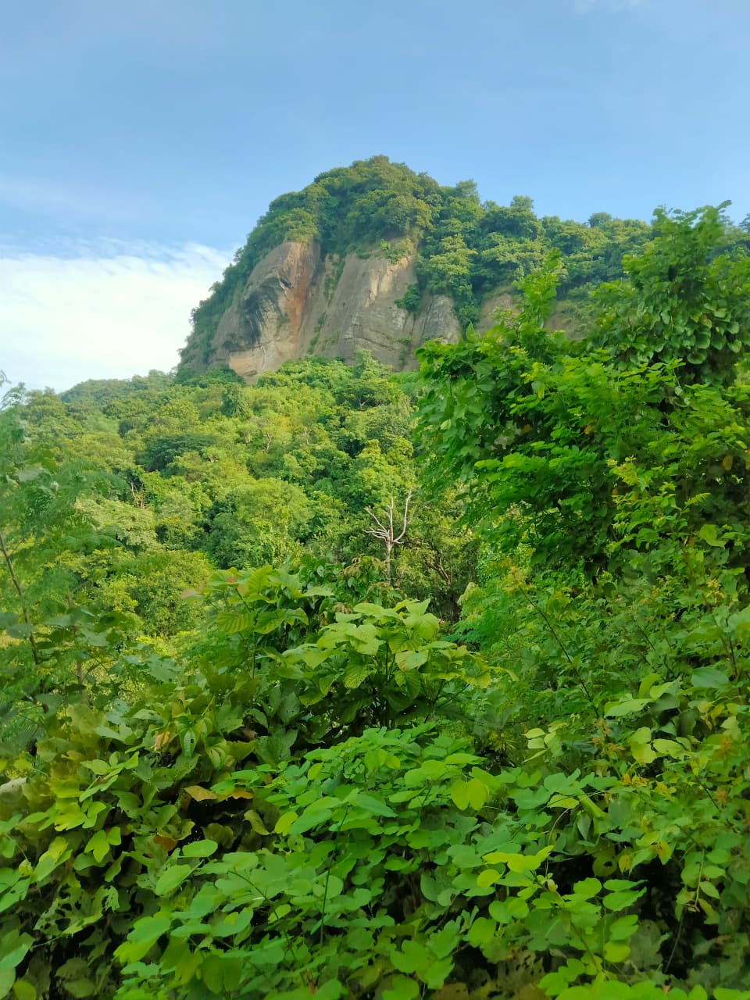

Sitakunda • Chattogram, Bangladesh
Sitakunda: Where Waterfalls, Mountains, and Clouds Taught Me That Every Great View Is Earned

Some places invite you to relax.
Others invite you to explore.
Sitakunda invites you to climb.
Long before I visited, I had seen countless photographs of Chandranath Hill, hidden waterfalls, dense forests, and mist-covered trails. Every image looked breathtaking. But travel has taught me something important: no photograph can capture the feeling of standing in a place with your own eyes, hearing its sounds, and breathing its air.
So, before sunrise, I packed my backpack, picked up my camera, and began another journey.
Because some destinations aren't meant to be admired from a screen.
They're meant to be experienced, one step at a time.
A Journey Through the Heart of Bangladesh

For me, every memorable adventure begins with a train ride.
There is something timeless about traveling by rail.
As the train slowly left Dhaka behind, the concrete skyline faded into endless fields of green. Villages appeared one after another, separated by rivers, ponds, and stretches of farmland.
Children waved as the train passed.
Farmers paused their work for just a moment before returning to their fields.
Small railway stations came and went, each carrying its own quiet rhythm.
I rested my camera on the window and simply watched Bangladesh unfold.
Sometimes, the most beautiful destination is the view between two stations.
Where the Hills Begin
When I arrived in Sitakunda, I immediately noticed how different the landscape felt.
The flat plains of central Bangladesh slowly gave way to rolling green hills.
The air felt fresher.
The breeze carried the scent of damp earth and wild trees.
Unlike dramatic mountain ranges that overwhelm you with their size, Sitakunda welcomes you gently.
Its beauty doesn't shout.
It whispers.
Climbing Chandranath Hill
Every climb begins with confidence.
The first few steps always feel easy.
Then the trail begins to rise.
Stone steps replace smooth paths.
Steep slopes demand slower breathing.
Sweat begins to replace excitement.
The climb becomes less about reaching the top and more about finding the determination to take the next step.
There were moments when I stopped, not because I wanted to give up, but because I wanted to appreciate where I already was.
Every pause revealed another beautiful view.
Looking back, I realized something simple.
The higher you climb, the smaller your worries begin to look.
Listening to Silence
Halfway up the mountain, I stopped walking.
Not because I was tired.
Because I wanted to listen.
There were no traffic horns.
No crowded streets.
Only the sound of wind moving through the trees.
Birds calling somewhere deep inside the forest.
Leaves gently brushing against one another.
For the first time in a long while, I noticed that silence isn't the absence of sound.
It has a sound of its own.
And sometimes, it says more than words ever can.
Standing Above the Landscape
Reaching the summit of Chandranath Hill felt less like an achievement and more like a reward.
The entire landscape stretched endlessly beneath me.
Green hills rolled toward the horizon.
The Bay of Bengal shimmered in the distance.
Villages looked like tiny islands surrounded by fields.
Cloud shadows drifted slowly across the valleys below.
For several minutes, nobody spoke.
No one needed to.
Some views deserve admiration, not conversation.
Standing there, I understood why people have climbed these hills for generations.
Not simply to reach the top—
but to see the world from a different perspective.
Following the Sound of Water
The adventure wasn't over.
Sitakunda is also home to some of Bangladesh's most beautiful waterfalls, hidden deep within forests and rocky valleys.
The journey to them required another hike.
This time, the trail became wetter.
Crossing small streams.
Walking over slippery stones.
Passing beneath towering trees whose branches filtered the afternoon sunlight into soft green light.
Long before the waterfall appeared, I heard it.
A distant roar echoing through the forest.
Nature announcing its presence.
The Waterfall
Then, suddenly, it appeared.
Crystal-clear water cascading down dark rocks.
Mist rising into the cool forest air.
Tiny droplets floating through the sunlight like scattered diamonds.
I stood quietly at the edge of the pool, letting the sound of rushing water drown out every other thought.
Waterfalls have a remarkable way of reminding us how powerful simplicity can be.
Water.
Gravity.
Time.
Nothing more.
Yet together, they create something unforgettable.
The People of the Hills
The people living around Sitakunda have built their lives alongside these mountains for generations.
Small roadside tea stalls welcome tired hikers.
Local vendors sell fresh fruits and simple meals.
Families continue their daily routines surrounded by hills that have watched countless generations grow.
Travel becomes meaningful when we stop seeing places as attractions and begin seeing them as homes.
Every destination belongs to someone.
Understanding that changes the way we travel.
History Beyond the Landscape
Sitakunda is not only a place of natural beauty.
For centuries, Chandranath Hill has been an important pilgrimage site, attracting visitors from across the region.
Faith, history, and nature exist side by side here.
Whether someone comes for spiritual reasons or simply to experience the landscape, the mountain welcomes everyone in the same way.
One step at a time.
The Walk Back
Going downhill was easier.
But strangely, I walked more slowly.
I wasn't in a hurry anymore.
I wanted to remember every turn in the trail.
Every bird call.
Every breeze.
Every view.
Because I knew that once I returned to the city, these quiet moments would become some of my most treasured memories.
What Sitakunda Taught Me
As the train carried me back toward Dhaka, I kept thinking about the mountain.
Life often feels like climbing a steep trail.
The path becomes difficult.
The destination feels distant.
The temptation to stop grows stronger.
But mountains teach a lesson that reaches far beyond hiking.
The most rewarding views rarely come from the easiest roads.
Sometimes you have to sweat.
Sometimes you have to struggle.
Sometimes you have to keep climbing even when the summit isn't yet visible.
And when you finally reach the top, you realize something unexpected.
The view was never just the reward.
The climb itself changed you.
Because the greatest journeys are never measured by how far we travel.
They are measured by who we become along the way.